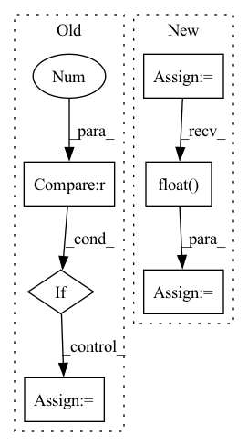

Pattern ID :33037
Before Change
loop = tqdm(test_loader)
for batch_idx, frames in enumerate(loop):
if i >= 10 : break
frames = frames.to(DEVICE) // [1, T, 3, h, w]
frames_vis = postprocess_img(frames.squeeze(dim=0)) // [T, 3, h, w]
input = frames[:, :VIDEO_IN_LENGTH] // [1, t, 3, h, w]
pred_rgb = pred_rgb_model.pred_n(input, pred_length=VIDEO_PRED_LENGTH) // [1, T, 3, h, w]
pred_rgb_vis = postprocess_img(pred_rgb) // [T, 3, h, w]
pred_rgb = torch.cat([input, pred_rgb], dim=1)
pred_rgb = torch.stack([seg_model(pred_rgb[:, i]) for i in range(pred_rgb.shape[1])], dim=1)
pred_rgb = pred_rgb.argmax(dim=2).squeeze() // [T, h, w]
pred_then_colorized_vis = colorize_semseg(postprocess_mask(pred_rgb), num_classes=SYNPICK_CLASSES) // [T, 3, h, w]
frames_seg = [seg_model(frames[:, i]).argmax(dim=1) for i in range(frames.shape[1])]
frames_seg = torch.stack(frames_seg, dim=1) // [1, 1, h, w]
input_seg = frames_seg[:, :VIDEO_IN_LENGTH] // [1, t, 1, h, w]
pred_mask = pred_mask_model.pred_n(input_seg, pred_length=VIDEO_PRED_LENGTH)
pred_mask = pred_mask.argmax(dim=2) // [1, T, 1, h, w]
pred_mask = postprocess_mask(torch.cat([input_seg, pred_mask], dim=1).squeeze()) // [T, h, w]
pred_mask_vis = colorize_semseg(pred_mask, num_classes=SYNPICK_CLASSES) // [T, 3, h, w]
frames_colorized = colorize_semseg(postprocess_mask(frames_seg.squeeze()), num_classes=SYNPICK_CLASSES).unsqueeze(dim=0) // [1, T, 3, h, w]
frames_colorized_vis = postprocess_img(frames_colorized.squeeze(dim=0)) // [T, 3, h, w]
input_colorized = frames_colorized[:VIDEO_IN_LENGTH]
colorized_then_pred = pred_colorized_mask_model.pred_n(input_colorized, pred_length=VIDEO_PRED_LENGTH)After Change
test_data = SynpickVideoDataset(data_dir=data_dir, vid_type=("rgb", 3), num_frames=VIDEO_TOT_LENGTH,
step=4, allow_overlap=VID_DATA_ALLOW_OVERLAP)
test_loader = DataLoader(test_data, batch_size=1, shuffle=True, num_workers=4)
iter_loader = iter(test_loader)
with torch.no_grad():
for i in tqdm(range(10)):
frames = next(iter_loader).to(DEVICE) // [1, T, 3, h, w]
frames_vis = postprocess_img(frames.squeeze(dim=0)) // [T, 3, h, w]
input = frames[:, :VIDEO_IN_LENGTH] // [1, t, 3, h, w]
pred_rgb = pred_rgb_model.pred_n(input, pred_length=VIDEO_PRED_LENGTH)
pred_rgb = torch.cat([input, pred_rgb], dim=1) // [1, T, 3, h, w]
pred_rgb_vis = postprocess_img(pred_rgb.squeeze(dim=0)) // [T, 3, h, w]
pred_rgb = torch.stack([seg_model(pred_rgb[:, i]) for i in range(pred_rgb.shape[1])], dim=1)
pred_rgb = pred_rgb.argmax(dim=2).squeeze() // [T, h, w]
pred_then_colorized_vis = colorize_semseg(postprocess_mask(pred_rgb), num_classes=SYNPICK_CLASSES).transpose(0, 3, 1, 2) // [T, 3, h, w]
frames_seg = torch.stack([seg_model(frames[:, i]) for i in range(frames.shape[1])], dim=1).argmax(dim=2) // [1, T, 1, h, w]
frames_seg_in = torch.stack([(frames_seg == i) for i in range(SYNPICK_CLASSES)], dim=2).float() // [1, T, c, h, w] one-hot float
input_seg = frames_seg_in[:, :VIDEO_IN_LENGTH] // [1, t, c, h, w]
pred_mask = pred_mask_model.pred_n(input_seg, pred_length=VIDEO_PRED_LENGTH).argmax(dim=2) // [1, n, 1, h, w]
pred_mask = torch.cat([input_seg.argmax(dim=2), pred_mask], dim=1).squeeze() // [T, h, w]In pattern: SUPERPATTERN
Frequency: 3
Non-data size: 6
Instances Fragment ID: 95548181
Project Name: ais-bonn/vp-suite
Commit Name: 13016d4ab8ba4f8e7ee087155a6c5171f4d00ba3
Time: 2021-08-02
Author: boltres@ais.uni-bonn.de
File Name: scripts/visualize_4_way.py
M Class Name: AnonimousClass
N Class Name: AnonimousClass
M Method Name: visualize_4_way(1)
N Method Name: visualize_4_way(1)
M Parent Class:
N Parent Class:
M File Name: scripts/visualize_4_way.py
N File Name: scripts/visualize_4_way.py
M Start Line: 16
M End Line: 73
N Start Line: 17
N End Line: 74
Before Change
image = np.ascontiguousarray(image, dtype=np.float32)
image = image
image /= 255
if len(image.shape) == 3 :
image = image[None] // expand for batch dim
input_name = self.model.get_inputs()[0].name
pred = self.model.run([self.model.get_outputs()[0].name],After Change
pred = self.model.run([self.model.get_outputs()[0].name], {input_name: processed_image})[0]
// Run Pytorch model
else:
processed_image = torch.from_numpy(processed_image).to(self.device)
// Change image floating point precision if fp16 set to true
processed_image = processed_image.half() if self.fp16 else processed_image.float()
pred = self.model(processed_image, augment=False)[0]
pred = pred.detach().cpu().numpy()
if isinstance(pred, np.ndarray):
pred = torch.tensor(pred, device=self.device) Fragment ID: 95548154
Project Name: augmentedstartups/as-one
Commit Name: 79f3ea97d63f873008f3ad548f1428f07f4d9dae
Time: 2022-09-07
Author: ajmair.kashif@axcelerate.ai
File Name: asone-linux/code/asone/detectors/yolor/yolor_detector.py
M Class Name: YOLOrDetector
N Class Name: YOLOrDetector
M Method Name: detect(8)
N Method Name: detect(8)
M Parent Class:
N Parent Class:
M File Name: asone-linux/code/asone/detectors/yolor/yolor_detector.py
N File Name: asone-linux/code/asone/detectors/yolor/yolor_detector.py
M Start Line: 38
M End Line: 72
N Start Line: 70
N End Line: 109
Before Change
img = torch.from_numpy(img).to(self.device)
img = img.float() // uint8 to fp16/32
img /= 255.0 // 0 - 255 to 0.0 - 1.0
if img.ndimension() == 3 :
img = img.unsqueeze(0)
return img
def _postprocess(self, img, origimg, pred, conf_thres, iou_thres, height, width):After Change
img = letterbox(img, new_shape=imgsz)[0]
pp_imgs.append(img)
pp_imgs = np.array(pp_imgs)
pp_imgs = pp_imgs.transpose(0, 3, 1, 2)
pp_imgs = torch.from_numpy(pp_imgs).to(self.device)
pp_imgs = pp_imgs.float() // uint8 to fp16/32
pp_imgs /= 255.0 // 0 - 255 to 0.0 - 1.0
return pp_imgs
def _postprocess(self, imgs, origimgs, pred, conf_thres, iou_thres): Fragment ID: 95548191
Project Name: elyha7/yoloface
Commit Name: 794e25df420f25fd7937e0af41fefd7bf184fad6
Time: 2022-01-10
Author: artemrebrikov@gmail.com
File Name: face_detector.py
M Class Name: YoloDetector
N Class Name: YoloDetector
M Method Name: _preprocess(2)
N Method Name: _preprocess(2)
M Parent Class:
N Parent Class:
M File Name: face_detector.py
N File Name: face_detector.py
M Start Line: 67
M End Line: 83
N Start Line: 66
N End Line: 82